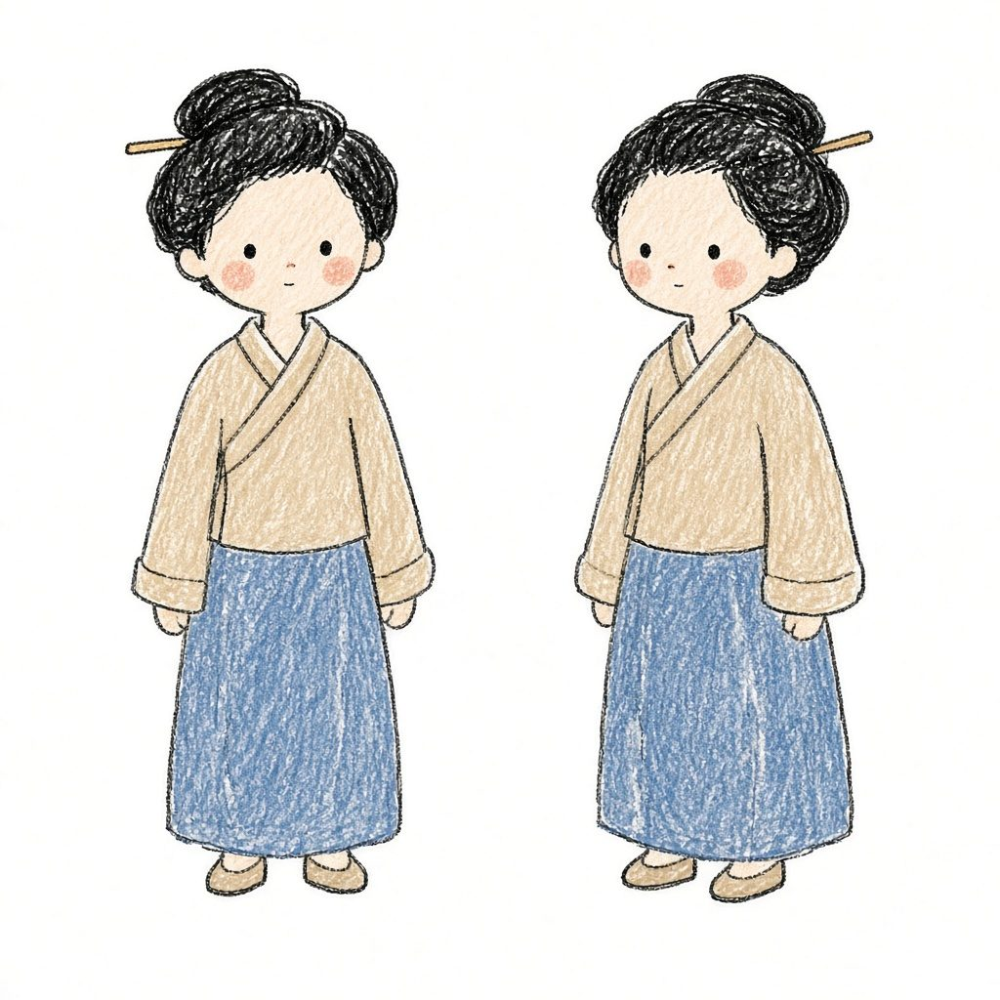

3:4 竖屏 · 手绘彩图直出 · 四故事合集 1 分钟
源项目 gnipbao/story-to-handdrawn-video · Remotion 4.0 · MIT
正在载入示例插画…

示例成片用 GitHub 上的 Remotion 渲染器导出。默认锁定彩铅日记漫画；自定义故事用画布手绘，上传图按原顺序 contain 不裁切。
每句一个节拍，保留原文。合集把四个故事接成一个文件，进度点按故事跳段；一剪梅和鎖龍頭配了旁白，其余是静音画面。空格键播放／暂停。